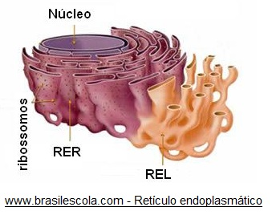
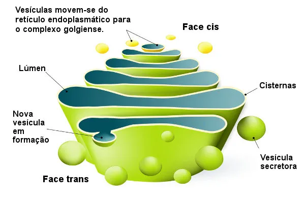
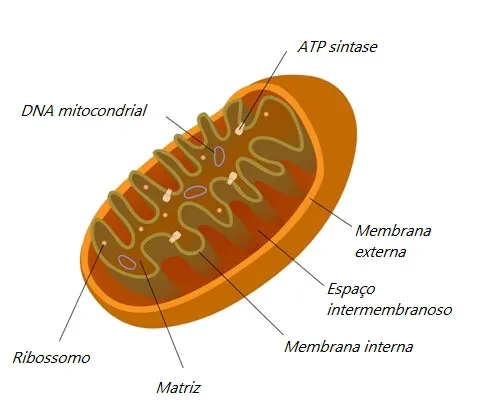
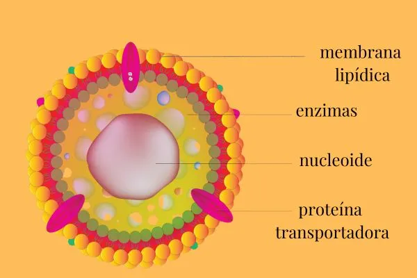
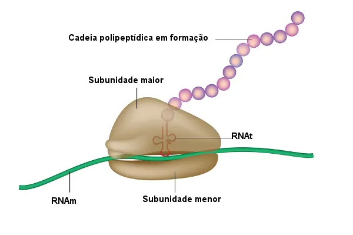
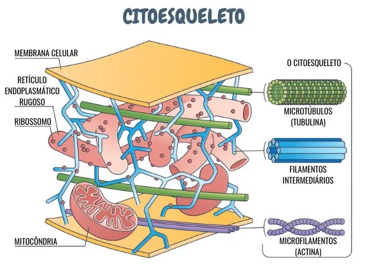
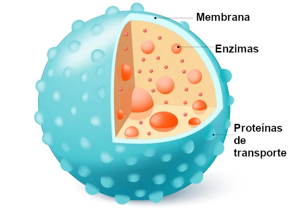
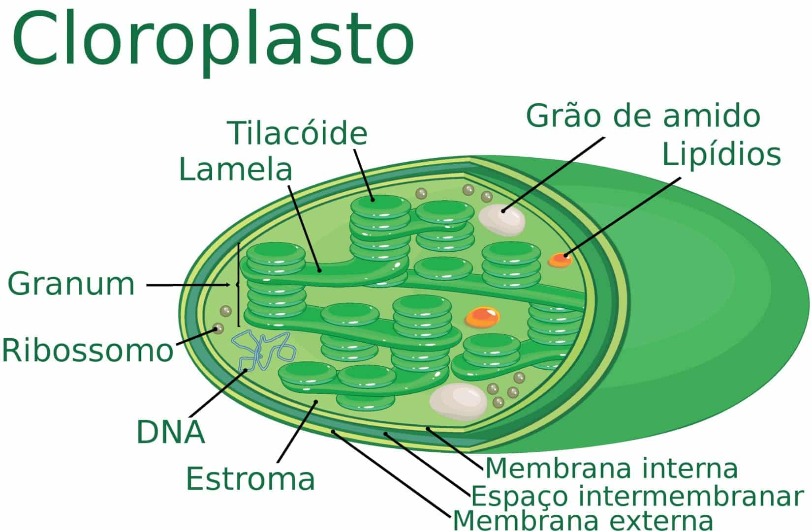
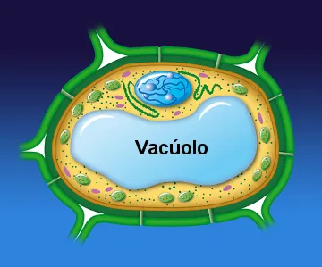
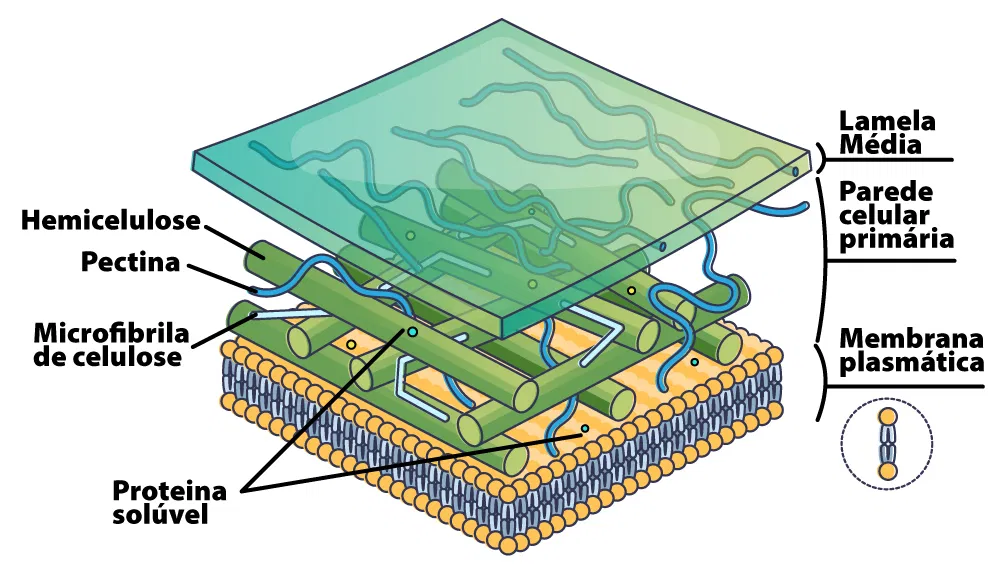

ORGANELAS CITOPLASMÁTICAS
As organelas citoplasmáticas são encontradas no citoplasma tanto das células animais quanto das células vegetais. A maioria das organelas presentes na célula animal também está presente na célula vegetal, mas as células vegetais possuem algumas organelas que não estão presentes nas células animais.
As organelas presentes nas células animais e vegetais:
- Retículo endoplasmático rugoso: O retículo endoplasmático rugoso (RER) está atuando na síntese proteica, onde os ribossomos aderidos à sua superfície produzem proteínas que são então direcionadas para o interior do retículo.
- Retículo endoplasmático liso: O retículo endoplasmático liso (REL) atua na síntese de lipídios e desempenha outras funções, como o metabolismo de carboidratos, a detoxificação de substâncias e o armazenamento de íons. E , ao contrário do retículo endoplasmático rugoso (RER), o REL não possui ribossomos em sua superfície. 
- Complexo de Golgi: Também conhecido como aparelho de Golgi, é uma organela celular que desempenha um papel crucial no processamento e secreção de substâncias. Ele modifica, armazena e envia proteínas e lipídios para diferentes destinos dentro ou fora da célula. 
- Mitocôndria: A mitocôndria possui duas membranas — uma interna e uma externa — separadas por um espaço intermembranoso. A membrana interna se projeta para dentro, formando as cristas mitocondriais. Além disso, as mitocôndrias são essenciais para a produção de energia na forma de ATP e desempenham papéis fundamentais em várias funções metabólicas e na manutenção da homeostase celular. 
- Peroxissomos: Os peroxissomos são organelas que ajudam a realizar reações químicas usando oxigênio e peróxido de hidrogênio. Eles contêm enzimas e são importantes para o metabolismo de ácidos graxos, desintoxicação e formação de plasmalogênios. 
- Ribossomos: Os ribossomos são organelas essenciais para a síntese de proteínas. Eles podem estar livres no citosol ou associados ao retículo endoplasmático rugoso. Os ribossomos que estão no citosol produzem proteínas que geralmente ficam no próprio citosol. Por outro lado, os ribossomos ligados ao retículo endoplasmático rugoso normalmente sintetizam proteínas que serão incorporadas às membranas ou que serão empacotadas e secretadas pela célula. 
- Citoesqueleto: O citoesqueleto está envolvido em processos como a movimentação de organelas, a migração celular e a divisão celular. Ele é composto por três tipos de estruturas moleculares: os microtúbulos, os microfilamentos ou filamentos de actina e os filamentos intermediários. 
- Lisossomos: Os lisossomos possuem enzimas digestivas que quebram materiais tanto de dentro quanto de fora da célula, como proteínas, lipídios e carboidratos. Essas enzimas funcionam em um ambiente ácido, que é mantido no interior dos lisossomos. No entanto, são mais abundantes em células animais, onde desempenham um papel fundamental na digestão celular e na reciclagem de componentes. Em células vegetais, os lisossomos são menos comuns, pois muitas das suas funções são realizadas por vacúolos. 
Encontrados somente em célula vegetal:
- Cloroplasto: Os cloroplastos são organelas presentes em células vegetais e em algumas algas, responsáveis pela fotossíntese, o processo que converte luz solar em energia química. Eles contêm clorofila, o pigmento verde que absorve a luz. Além da clorofila, os cloroplastos contêm carotenoides, que são pigmentos de coloração amarela e alaranjada. Normalmente, esses pigmentos ficam escondidos pela clorofila. 
- Vacúolos: Os vacúolos são vesículas grandes que se formam a partir do retículo endoplasmático e do complexo golgiense. Eles são organelas com membrana, típicas de células eucariontes, e possuem uma membrana seletiva que distingue seu conteúdo do citoplasma. Isso permite que o que está dentro do vacúolo seja diferente do que se encontra no citoplasma. Essa capacidade de seletividade é uma característica comum a todas as membranas celulares. 
- Paredes celulares: A parede celular é uma estrutura rígida que envolve a membrana plasmática de células vegetais, fungos, bactérias e algumas algas. Ela desempenha funções essenciais, como conferir rigidez e forma à célula, ajudando a mantê-la estável. 